홍익대학교 공공디자인 전공 · 공공거버넌스와 리더십 2026-2
제5강
Stewardship
in Design
위계의 관리자가 아닌 변혁의 청지기로서의 디자이너
디자인 거버넌스의 전략적 요소로서의 스튜어드십
Reference · Dr. Jan Eckert, Stewardship in Design / www.nominute.city
이현성 홍익대학교 공공디자인
거버넌스를 ‘누가 누구를 통제하는가’의 위계 구조로만 본다면, 디자이너는 발주처의 지시를 형태로 옮기는 수행자(agent)에 머문다.
그러나 오늘의 공공 문제는 단일한 권한으로 풀리지 않는 사악한 문제(wicked problem)이다. 이때 필요한 것은 명령이 아니라, 관계와 생태계를 맡아서 돌보며 변화를 이끄는 역할, 곧 스튜어드십이다.
스튜어드십 = 위계적 통제가 아닌, 혁신의 주체로서 디자이너가 거버넌스에 개입하는 전략적 개념
디자이너는 자신이 디자인하는 인간과 인간이 아닌 존재, 커뮤니티는 물론
자신이 살고 있는 생태계의 관리인(steward)이라는 사실에
자부심을 가져야 한다.
“Designers should be proud of being stewards of the humans and non-humans, the communities, and the ecosystems they design for and live in.”
Dr. Jan Eckert, Stewardship in Design
Whanganui River, New Zealand · 2017년 법적 인격을 부여받은 강 (Te Awa Tupua)
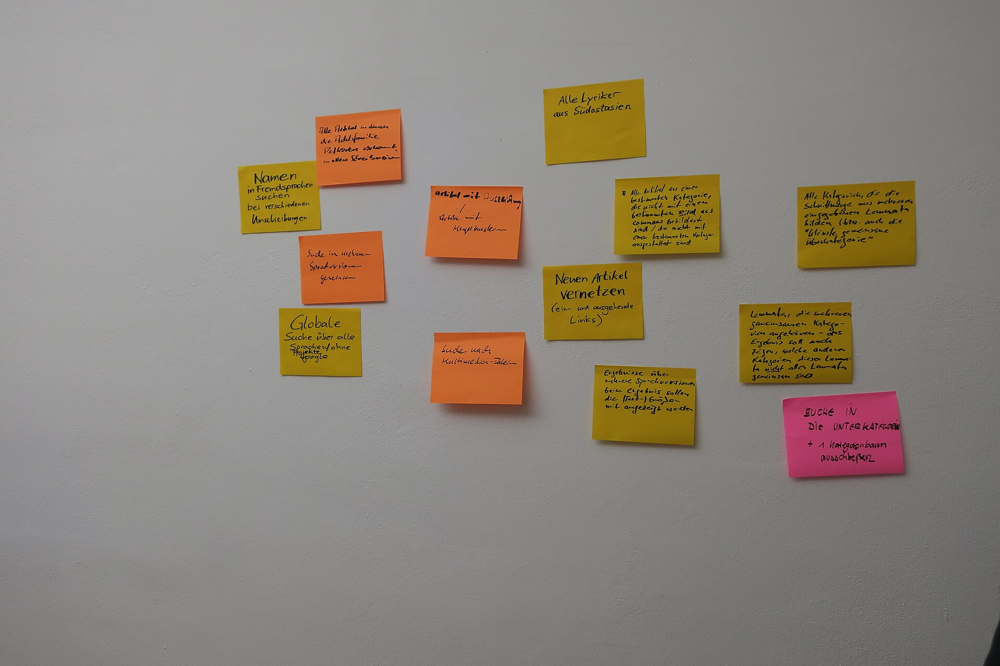
Part 1 · Genealogy
스튜어드십의
계보
‘맡겨진 것을 돌보는 자’에서
‘시스템 변화를 이끄는 자’로
Old English
stīg + weard
집·홀(stig, hall) + 지키는 이(weard, keeper)
= 집안 살림을 맡아 관리하는 사람 → 영지 관리인(14C)
소유(ownership)가 아닌 위임(trust)
자원·공동체·환경은 내 것이 아니라 다음 세대로부터 맡겨진 것
통제(control)가 아닌 돌봄(care)
결과를 지시하기보다 관계와 조건을 가꾸는 일
단기 성과가 아닌 장기적 책무(accountability)
시간 축을 확장해 판단
Peter Block, 1993
Stewardship: Choosing Service over Self-Interest
스튜어드십은 “주변 사람들을 통제(control)하기보다 그들에게 봉사(service)함으로써, 더 큰 조직의 안녕에 책임을 지려는 의지”이다. 리더십이 ‘앞에서 이끄는 것’이라면, 스튜어드십은 권한을 아래로·바깥으로 나누면서도 결과에 대한 책임은 놓지 않는 것이다.
공공디자인 맥락의 해석
디자인 스튜어드십
디자이너가 만든 결과물(사물·공간·서비스·정책)이 사람·비인간·공동체·생태계에 미치는 영향을 예측하고 책임지며, 참여를 조직해 지속적으로 돌보는 실천적 태도와 역량.
| 구분 | 위계형 행정Traditional Public Admin. | 신공공관리New Public Management | 뉴거버넌스Network Governance | 스튜어드십 거버넌스Stewardship / System Stewardship |
|---|---|---|---|---|
| 작동 원리 | 규칙·명령·통제 | 경쟁·성과·인센티브 | 협력·신뢰·네트워크 | 목적·돌봄·학습·장기 책무 |
| 시민의 위치 | 피통치자 | 고객(customer) | 파트너 | 공동 생산자·공동 관리인 |
| 국가의 역할 | 노 젓기 (rowing) | 방향 잡기 (steering) | 조정·중개 (brokering) | 조건 가꾸기 (tending the system) |
| 디자이너의 역할 | 도면·형태 수행자 | 서비스 공급자·브랜딩 | 퍼실리테이터 | 시스템 관리인·오케스트레이터·번역자 |
| 성과의 기준 | 절차 준수 | 효율·산출 | 합의·참여 | 웰빙·회복력·미래세대·비인간 존재 |
Osborne & Gaebler(1992) Reinventing Government · Rhodes(1996) · Osborne(2006) The New Public Governance? · Hallsworth(2011) System Stewardship, Institute for Government 를 바탕으로 재구성
대리인 이론 · Agency Theory
“디자이너는 감독해야 할 수행자”
청지기 이론 · Stewardship Theory
“디자이너는 공동 목적을 맡은 주체”
Davis, Schoorman & Donaldson (1997). Toward a Stewardship Theory of Management. Academy of Management Review, 22(1), 20–47.
1970
Maldonado La Speranza Progettuale, 기획의 희망, 환경과 디자인
1971
Papanek Design for the Real World, 디자이너의 사회적·도덕적 책임
1992
Buchanan Wicked Problems in Design Thinking, 디자인의 4개 질서
2007
Brighton 05-06-07 디자인을 통한 웰빙, 책임 있는 관리(stewardship)
2009
Ostrom 노벨상 공유자원(commons)의 공동체 자치 관리
2011–13
System Stewardship · HDL 정책의 시스템 관리 / 전략디자인과 스튜어드십
2012/17
Raworth 도넛 경제, 사회적 기초와 지구적 한계
2015
웨일스 미래세대법 미래세대의 웰빙을 법적 책무로
2017
AIGA · Montréal · Lancaster 디자인 선언 3종, 책임과 돌봄
2017
Eckert The Y-Shaped Designer, 연결 역량
2018
Eckert, Cumulus Paris Leading the Conversation, 리더십과 스튜어드십
2021–26
Systemic Design · nominute.city Design Council 프레임워크 / Hortopia(2024) / Eckert 단행본(2026)
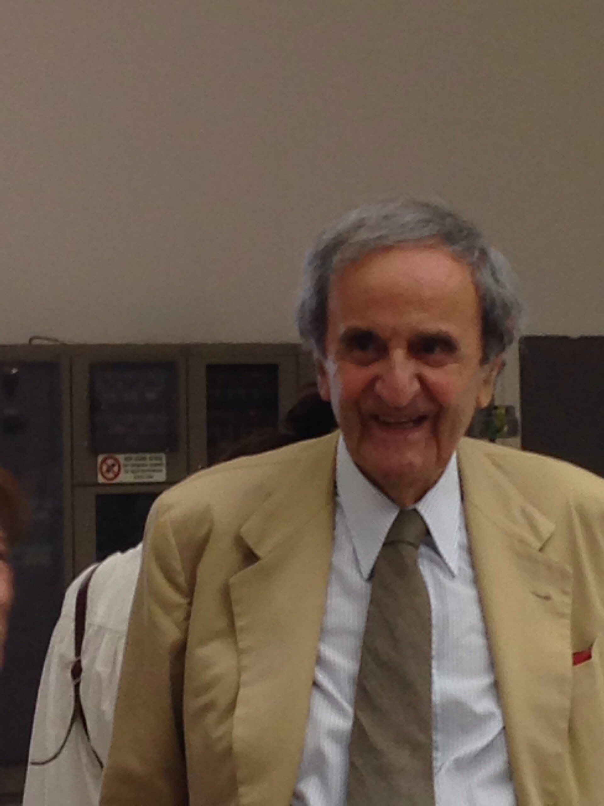
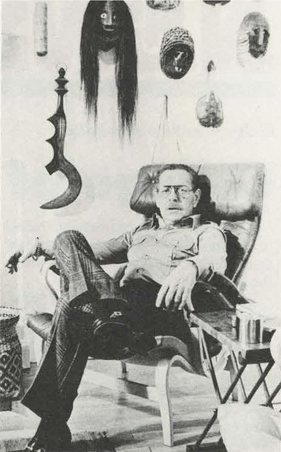
Origin · 1970–1971
“디자인보다 더 해로운
직업은 몇 안 된다”
“There are professions more harmful than industrial design, but only a very few of them.”
Victor Papanek, Design for the Real World (1971)
Papanek의 문제 제기
디자인이 소비를 부추기는 장식이 되었을 때, 디자이너는 사회·생태적 결과에 대한 도덕적 책임을 져야 한다. 제3세계·장애인·노인 등 시장이 외면한 사람들을 위한 디자인.
Maldonado의 문제 제기
La Speranza Progettuale(1970), 환경 위기 앞에서 ‘기획(progettazione)’은 여전히 희망의 정치적 실천이 될 수 있는가.
Eckert: “50년 넘게 논의되었지만, 디자인 실무와 교육에서는 제대로 구현되지 못했다.”
Tomás Maldonado (1922–2018) · inset: Victor Papanek (1923–1998)
“디자인은 경제를 위한 것이 아니라,
인간의 행복(wellbeing)을 위한 것이다.”
2007년 6월 5일, 브라이튼 근교 서섹스에 모인 디자이너·교육자 그룹(Margolin, Doordan, Brown, Cooper, Woodham)의 공동 성명. 20세기 디자인이 산업 경쟁력·정치 선전에 편중되었다는 반성에서 출발.
디자이너가 행동해야 할 네 개의 세계
자연 세계 균형·생명주기·기후와 조화
기술 세계 웰빙을 높이는 수단을 요구
정치 세계 긍정적 행동을 동원하도록 참여
내면 세계 정체성·문화·영성 존중
“이 힘은 존엄성, 유머, 지혜, 그리고 책임 있는 관리(stewardship)를 수반하여 신중하게 행사되어야 한다.”
AIGA · 2017
Designer 2025
American Institute of Graphic Arts
미래 디자이너의 7대 트렌드: 복잡한 문제, 집적과 큐레이션, 물리·디지털 경험의 연결, 회복력 있는 조직, 핵심 가치의 중요성, 데이터 경제 속 의미 만들기, 그리고 디자인 결과를 예측할 책임(accountability for anticipating design outcomes).
World Design Summit · 2017.10.24
Montréal Design Declaration
UNESCO·UN-Habitat·UN Environment 참관, 90여 개국 700여 기관 대표
디자인을 경제·사회·환경·문화의 지속가능한 발전을 위한 전략적 도구로 규정한 국제 선언. 디자인 정책·지표·표준·교육의 의제화와 UN SDGs 기여를 촉구.
“All people deserve to live in a well-designed world.”
Imagination Lancaster · 2017 → 2019
Lancaster Care Charter
Rodgers et al., Design Issues 35(1) · 16개국 참여
디자인을 돌봄(care)의 실천으로 재정의. “돌봄의 디자인은 영웅으로서의 디자이너 모델에서 벗어난다.” 디자인은 맥락·차이·시간에 주의하는 관계적·생태적·겸손한 실천이어야 하며, 이미 존재하는 자원을 인정하고 관리(steward)해야 한다.
배경: Montréal · World Design Summit 2017 개최 도시
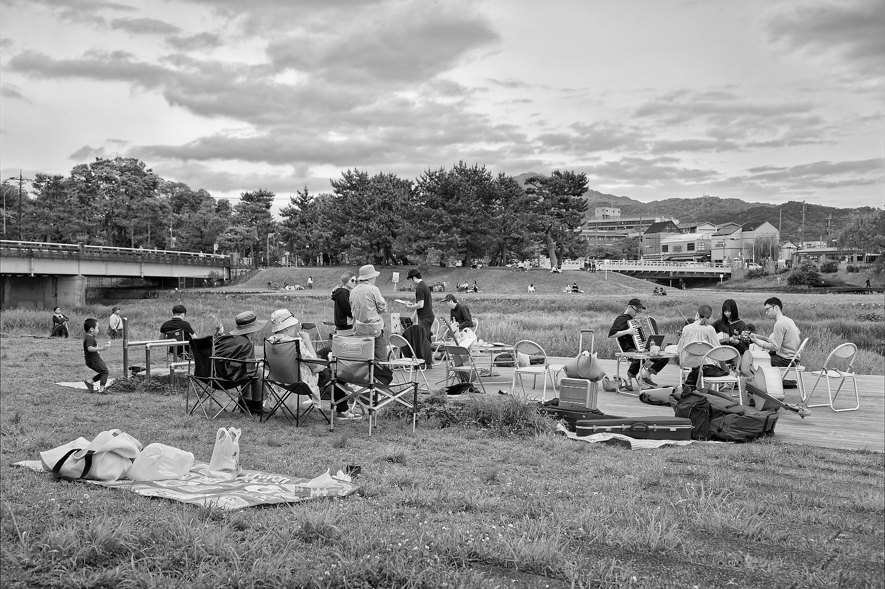
Tadasu-Gawara, Kyoto · nominute.city © Jan Albert Eckert, 2025
Part 2 · Jan Eckert
Jan Eckert의
Stewardship
in Design
디자이너를 환경-사회 변혁의 주체로 양성하려는 시도
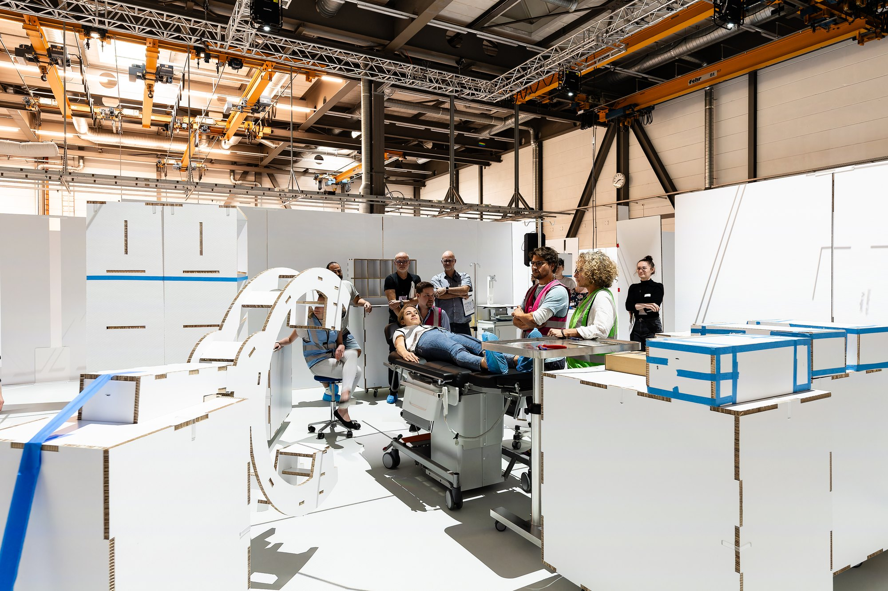
Swiss Center for Design and Health · Living Lab
스위스 니다우(Nidau)의 3,500㎡ 리빙랩. 의료진·건축가·디자이너가 1:1 스케일 XR 시뮬레이션 공간에서 병원을 함께 설계·검증한다.
탈성장 도시학자 · 디자인 교육자 · 사진 연구자
“사회-도시 시스템과 평생학습의 영역에서 전환의 과정을 개발하고 동행하는” 20년 경력의 도시·디자인 연구자. 스위스 Biel/Bienne 기반.
교육 실내건축 BA(슈투트가르트·ENSAD 파리) · 국제 MA(슈투트가르트·에든버러·SUPSI) · 디자인학 박사(IUAV 베네치아, 2012)
2016–21 루체른 응용과학예술대(HSLU) MA Design 학과장, 2019 정교수
2021– 예테보리대학교 HDK-Valand 디자인 유닛 책임자
~2024 Swiss Center for Design and Health 리빙랩 책임자 · 부센터장
2025– nominute.city 설립 · L*3 Lugano Living Lab 연구원 · HSLU 방문교수
“Maldonado(1970)와 Papanek(1971) 이후 디자인의 사회적·생태학적 책임은 많이 논의되었지만 실무에서는 제대로 구현되지 않았다. 디자인 교육조차 낡은 패러다임을 극복하고, 커리큘럼을 환경-사회 변혁의 주체로서 디자이너 세대를 양성하는 플랫폼으로 전환하는 데 여전히 어려움을 겪고 있다.”
Sources: janeckert.swiss/about · Eckert CV (2021) · vitality.swiss (2024) · Eckert, Stewardship in Design
| 연도 | 저작 | 핵심 논지 |
|---|---|---|
| 2017 | The Y-Shaped Designer · J. of Education and Learning 6(4) | 분야 간 협업을 이끄는 연결 역량 |
| 2017 | The Agile Artifact · Universal J. of Management 5(5) | 미완의 디자인, 반취약성(antifragile) |
| 2018 | Leading the Conversation · Cumulus Paris | “작가에서 리더십으로” · 디자인 영역 밖과의 연결 |
| 2021 | Rethinking Design Education for a VUCA World (Junginger·Noël 공저) | 불확실성 시대의 다층적 디자인 교육 |
| 2021 | 블로그 Stewardship in Design · 4영역 · 도넛 커리큘럼 | 안에서 바깥으로(inside-out) 배우는 교육 |
| 2024 | Hortopia: Territories of Co-transformation, By Design and by Disaster, Bolzano | 정원·장소를 통한 공동 변혁 |
| 2026 | Stewardship in Design Education: Future-Proofing the Eco-Social Curriculum (Lived Places Publishing) | “내면에서, 예견으로 이끄는 디자인 리더십” |
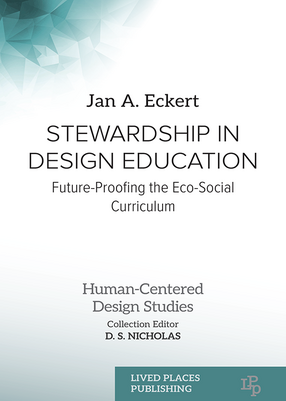
Eckert, J. A. (2026). Stewardship in Design Education. Lived Places Publishing. 장(章) 예: “Design leadership: Leading from inside and with foresight”, “Designing toward the Coenocene”
먼저, 우리가 알던 T자형 인재.
T자형 (T-shaped)
하나의 분야에 대한 깊은 전문성(세로축)과 다양한 분야에 대한 폭넓은 이해(가로축). 효율적 실행에 초점.
T자형 (T-shaped)
하나의 분야에 대한 깊은 전문성(세로축)과 다양한 분야에 대한 폭넓은 이해(가로축). 효율적 실행에 초점.
Y자형 (Y-shaped)
T자형을 관리(management) 관점에서 보완. 두 갈래의 팔이 서로 다른 분야로 뻗어 나가 분야 간 협업을 이끄는 연결 역량(리더십·경영·전략·소통)을 형성한다.
거버넌스적 의미
Y의 갈림목 = 이해관계자가 만나는 접점. 디자이너는 그 접점에서 조직 내·외부의 복잡한 협업을 조율하는 전략적 리더가 된다. Y자형 모델을 논의하며 Eckert는 스튜어드십의 첫 원칙을 정리하게 된다.
Y의 세 단계 역할 (Eckert 2017)
인공물 Maker · Researcher · Entrepreneur
전략 기획 Consultant · Strategist · Catalyst
문화 시스템 Broker · Cultivator · Curator
Eckert, J. (2017). The Y-Shaped Designer: Connective Competences as Key to Collaboration across Disciplines. Journal of Education and Learning, 6(4), 137–144.
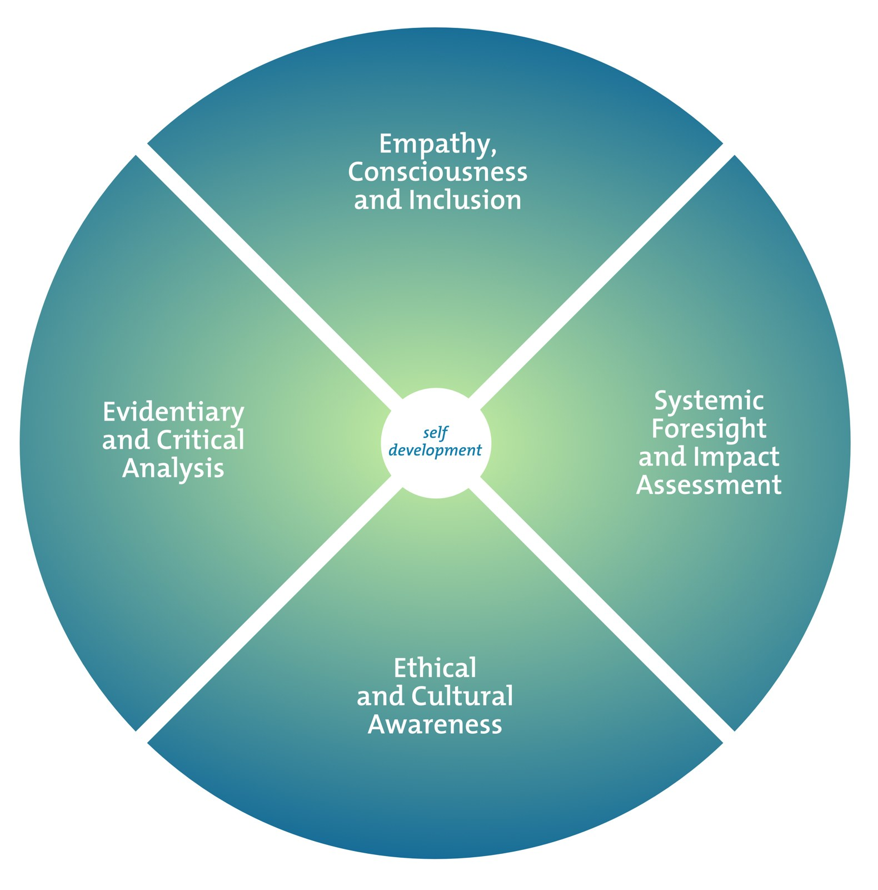
Four Areas · Systems Approach
스튜어드십의
네 가지 영역
변화는 디자이너 자신에게서 시작된다.
Four Areas · Systems Approach
스튜어드십의
네 가지 영역
시스템적 접근에 기반한 네 영역이 자기 개발(Self-development)을 중심으로 회전한다. 변화는 디자이너 자신에게서 시작된다.
공감·의식·포용
Empathy, Consciousness & Inclusion
체계적 예측·영향 평가
Systemic Foresight & Impact Assessment
윤리적·문화적 인식
Ethical & Cultural Awareness
증거 기반·비판적 분석
Evidentiary & Critical Analysis
Principle 1 · 공감·포용
포용과 참여
Inclusion & Participation
공동디자인을 이끌거나 촉진자 역할을 맡을 때, 디자이너는 필요한 모든 참가자를 적극적으로 포함시킬 책임이 있다.
Principle 2 · 공감·포용
공감 리더십
Empathetic Leadership
다양한 문화 간 대화와 프로젝트를 주도하기 위해 공감에 기반한 리더십을 습득하고, 이해관계자 관계 속에서 발휘한다.
Principle 3 · 영역 공통
애자일
Agility
시스템 전반의 향후 확장·이전에 대비할 수 있도록 포괄적이고 적응 가능한 프로세스와 솔루션을 만들며 개방성을 수용한다.
Principle 4 · 예측·평가
예측과 평가
Foresight & Evaluation
인간·비인간 존재, 문화, 사회, 경제, 생태계와의 관계에 대한 개입의 영향을 예측·평가·제어한다.
Principle 5 · 예측·평가
문제 식별과 활용 지점
Identifying Problems & Leverage Points
개입 단계에서의 마찰·충돌·레버리지 포인트를 적극적으로 찾아내고 드러낸다. (cf. Donella Meadows)
Principle 6 · 영역 공통
모델링과 예측
Modeling & Prediction
스스로 개발한 시나리오를 정량·정성 데이터 기반의 예측 분석으로 비판적으로 검증한다.
Source: Eckert, J. Stewardship in Design. 영역 표기는 강의 해설서의 분류 기준 · ‘영역 공통’은 네 영역을 가로지르는 원리
Principle 7 · 윤리·문화
윤리적·문화적 인식
Ethical & Cultural Awareness
모든 디자인 개입과 그것이 인간·비인간·문화·사회·경제·생태계에 미치는 영향 사이의 관계를 작업의 핵심으로 인식한다.
Principle 8 · 윤리·문화
의식과 행동의 변화
Transforming Consciousness & Behaviour
특정 영역에서 행동하려면 의식과 행동의 변화가 필요함을 안다. 그러므로 체계적 디자인 개입은 자기 변화에서 시작된다.
Principle 9 · 영역 공통
촉진과 번역
Facilitation & Translation
미디어·문화·경제·기술 전반에서 서로 다른 언어를 잇는 촉진자이자 번역자 역할을 한다.
Principle 10 · 증거·분석
법의학적 분석
Forensics
디자인으로 해결할 마찰·갈등·문제를 밝히기 위해 확실한 사실에 근거한 증거를 결합하는 능력을 적용한다.
Principle 11 · 증거·분석
무결성과 투명성
Integrity & Transparency
자신의 작업에 책임을 지고, 커뮤니티에 대해 최대한 투명하도록 방법론·연구·수단을 공개한다.
Principle 12 · 영역 공통
데이터 리터러시와 탈연산
Data Literacy & De-Computation
데이터 기반 프로세스를 인식하고 이를 “탈연산의 행위자”로 연결해, 인간 사회와 세계를 위한 가치로 환류한다.
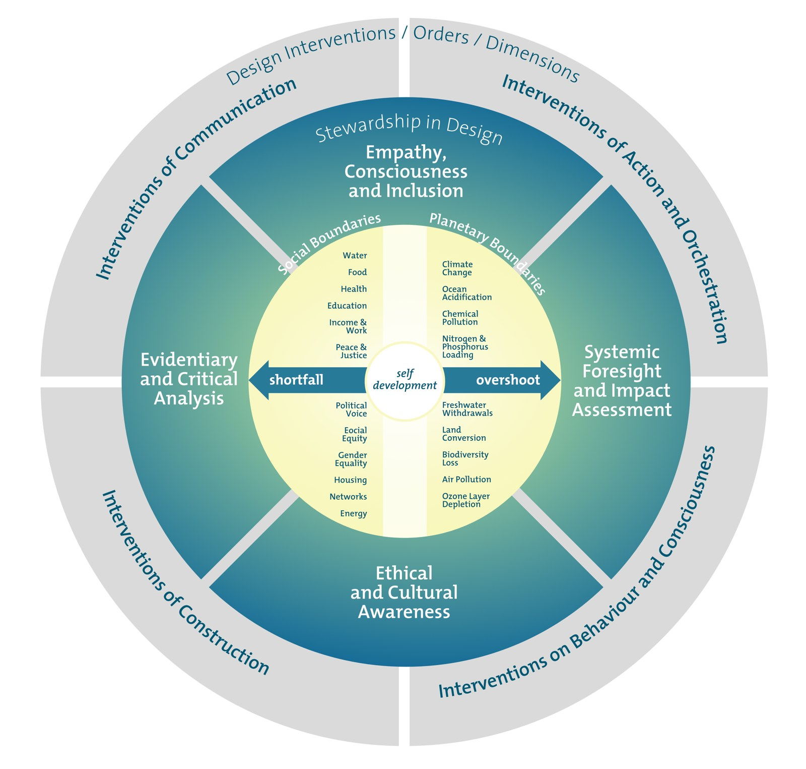
Design Curriculum × Doughnut
스튜어드십 기반
디자인 커리큘럼
Kate Raworth의 도넛 경제 모델을 디자인 교육에 겹쳐 놓은 다이어그램.
중심 · Self-development
모든 개입은 디자이너의 자기 개발에서 출발
Shortfall · 사회적 경계
물·식량·건강·교육·소득·평화와 정의·정치적 목소리·사회적 형평·성평등·주거·네트워크·에너지, 채워야 할 최소 기준
Overshoot · 지구적 경계
기후변화·해양 산성화·화학 오염·질소/인 과부하·담수 취수·토지 전용·생물다양성 손실·대기오염·오존층 파괴, 넘지 말아야 할 한계
디자이너의 목표: 미달을 채우고 초과를 줄여 안전하고 정의로운 공간(도넛의 고리) 안에서의 개발을 유도
Interventions of
Communication
소통의 개입
기호·이미지·정보를 통해 의미를 전달하고 이해를 공유
← 증거 기반·비판적 분석
무결성과 투명성, 법의학적 분석
Buchanan: Symbols
Interventions of
Construction
구성의 개입
사물·공간·인공물을 만들어 물리적 조건을 변화
← 윤리적·문화적 인식
윤리 인식, 의식과 행동의 변화
Buchanan: Things
Interventions of
Action & Orchestration
행동·조율의 개입
서비스·과정·이해관계자의 상호작용을 설계하고 조율
← 공감·의식·포용
포용과 참여, 공감 리더십
Buchanan: Actions
Interventions on
Behaviour & Consciousness
행동·의식에 대한 개입
시스템·환경·가치관 차원에서 사고와 문화를 전환
← 체계적 예측·영향 평가
예측과 평가, 레버리지 포인트
Buchanan: Thoughts / Systems
개입의 질서가 바깥으로 갈수록 대상은 ‘사물’에서 ‘관계와 의식’으로 확장된다. 공공디자인 거버넌스의 영역이 바로 이 바깥 고리이다.
Buchanan, R. (1992). Wicked Problems in Design Thinking. Design Issues, 8(2), 5–21 의 ‘디자인의 네 질서’와 Eckert 다이어그램의 외곽 고리를 대응해 재구성 (4강 Wicked Problem과 연결)
nominute.city · Since 2025
15분 도시, 1분 도시,
그리고 ‘무(無)분’ 도시
Eckert가 2025년 설립한 탈성장(post-growth) 생태-사회 도시 전환 연구 이니셔티브. 사진 연구·현상학·도시 사운드스케이프 생태학으로 탈성장 도시의 ‘아직 오지 않은 것(not-yet)’을 탐색하며 현존의 도시학(urbanism of presence)을 지향한다.
Satoakichi · 교토·도쿄
빈터(akichi) 약 150곳 사진 연구. 마을숲 ‘사토(sato)’의 돌봄·관리(stewardship) 개념을 빈터와 결합.
Tadasu-Gawara · 교토 가모강
“효율과 성장의 서사를 넘어선 도시 공존”을 강변에서 관찰.
Urban Endemism Manifesto
도시 고유종은 효율·착취·영구 성장이라는 지배적 패러다임에 도전한다.
해석 노트: ‘No-minute’은 이동시간·효율 지표 자체를 넘어 머무름·현존으로 도시를 보자는 강의자의 해석이며, 사이트에 명시된 정의는 아님. 파트너: Hortopia, Pro Helvetia(2025 연구 지원) 등.
Satoakichi · nominute.city © Jan Albert Eckert, 2025
15분
15-Minute City · 2016~
Carlos Moreno · 파리 Anne Hidalgo(2020)
15분
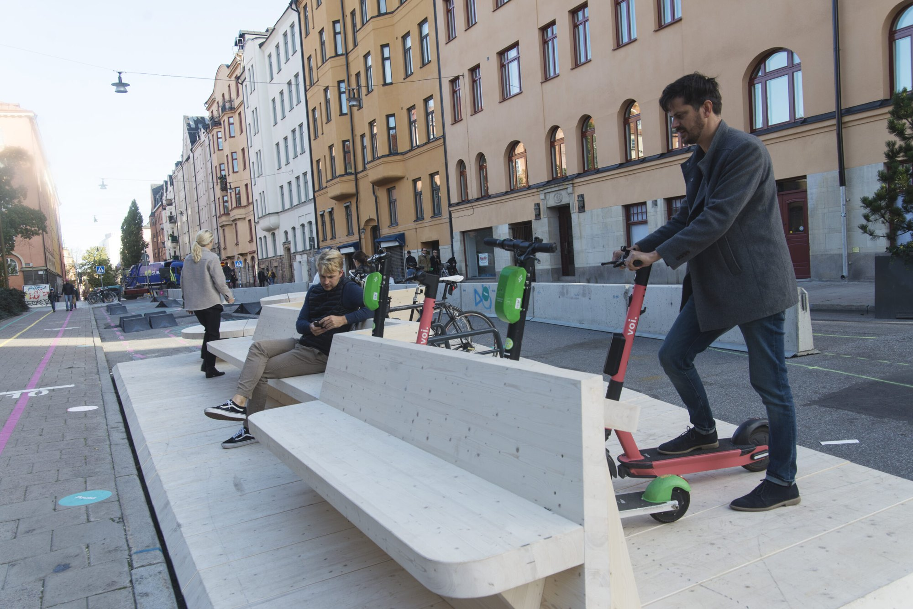
1분
One-Minute City · 2020–21
Dan Hill · Vinnova · ArkDes · 스톡홀름 (Street Moves)
15분
1분
무(無)분
No-Minute City · 2025~
Jan Eckert · nominute.city
15분
1분
무(無)분
15-Minute City · 2016~
Carlos Moreno · 파리 Anne Hidalgo(2020)
One-Minute City · 2020–21
Dan Hill · Vinnova · ArkDes · 스톡홀름 (Street Moves)
No-Minute City · 2025~
Jan Eckert · nominute.city
일상의 필요를 도보·자전거 15분 안에. 근접성(proximity)을 도시 계획의 단위로.
주체 · 시 정부의 도시계획
집 앞 거리를 주민이 모듈형 키트로 공동 설계·관리. “2030년까지 모든 거리를”.
주체 · 주민·국가 혁신청·디자이너의 협력
시간·효율 지표를 넘어 머무름·현존·공존. 인간과 비인간이 함께 사는 장소의 돌봄.
주체 · 장소의 모든 거주자 = 공동 관리인
Moreno et al. (2021) Introducing the “15-Minute City”, Smart Cities 4(1) · Hill, D. / Vinnova Street Moves (2020–21) · nominute.city (2025). ‘무분 도시’의 비교 해석은 강의자의 재구성.
Part 3 · Governance
거버넌스 요소로서의
스튜어드십
위계적 통제가 아닌,
혁신의 주체로서의 전략적 개념
Helsinki Design Lab · Sitra · 2013
스튜어드십은 많은 사람이 계획을 구상하고 많은 손이 실행에 관여할 때, 결정을 영향(impact)과 정렬시키는 기술이다.
“Stewardship is the art of aligning decisions with impact when many minds are involved in making a plan, and many hands in enacting it.”
Legible Practises · Six Stories
Boyer, Cook & Steinberg가 ‘스튜어드십의 기술’로 읽어낸 6개 사례: 뉴욕 브라운스빌 파트너십 · 칠레 콘스티투시온 재건(Elemental) · 영국 GDS · 미국 CFPB · 덴마크 MindLab · Nesta Creative Councils
Institute for Government (UK) · 2011
정책은 한 번 만들어 집행되는 것이 아니라, 시스템 안의 여러 행위자들에 의해 끊임없이 다시 만들어진다.
중앙정부는 자신의 역할을 ‘시스템 스튜어드십’으로 보아야 한다. 정책이 현장에서 어떻게 변용되는지 살피고, 필요할 때 시스템을 원하는 결과 쪽으로 조향(steer)하는 것.
“내가 통제하지 않는 시스템을 앞으로 이끌 수 있는 리더십과 자신감”
한 고위 공무원의 말, Hallsworth (2011) System Stewardship
위계적 거버넌스
단체장·중앙
부서 · 과업지시
용역사
디자이너 (수행)
시민 (수혜자 · 민원인)
명령 · 통제 · 납품 · 단선적 책임
위계적 거버넌스
단체장·중앙
부서 · 과업지시
용역사 · (빈자리)
시민 (수혜자 · 민원인)
명령 · 통제 · 납품 · 단선적 책임
스튜어드십 거버넌스
행정
시민
기업
비인간생태계
미래세대
연구자
디자이너steward
돌봄 · 조율 · 번역 · 학습 · 순환적 책무
권한의 원천 직위 → 신뢰와 관계
디자인의 대상 납품물 → 조건과 관계
책임의 범위 발주처 → 인간·비인간·미래세대
Role 1
시스템 사고자
System Thinker
미시와 거시를 오가며, 부서와 분야의 칸막이를 가로질러 모든 것이 어떻게 연결되어 있는지 본다.
Eckert · 체계적 예측 · 레버리지 포인트 · 모델링
Role 2
리더 · 이야기꾼
Leader & Storyteller
무엇이 가능한지에 대한 이야기를 들려주고, 끝까지 일을 밀고 가는 끈기를 가진다.
Eckert · 공감 리더십 · 의식과 행동의 변화
Role 3
디자이너 · 제작자
Designer & Maker
아이디어를 눈에 보이는 프로토타입으로 만들어 일이 실제로 일어나게 한다.
Eckert · 애자일 · 증거 기반 분석 · 투명성
Role 4
연결자 · 소집자
Connector & Convener
서로 다른 배경의 사람들이 만나는 장을 만들고, 점들을 이어 더 큰 운동을 만든다.
Eckert · 포용과 참여 · 촉진과 번역
한 사람이 모두 맡을 수도, 팀이 나누어 맡을 수도 있다. 스튜어드십은 개인의 덕목이 아니라 거버넌스 안에 설계되어야 하는 역할 체계이다.
Design Council (2021). Beyond Net Zero: A Systemic Design Approach. Systemic Design Framework의 4개 역할에 Eckert의 원칙을 대응
| 요소 | 위계적 거버넌스에서 | 스튜어드십 거버넌스에서 | Eckert의 근거 |
|---|---|---|---|
| 목적 Purpose | 예산 집행·사업 완료 | 사회적 기초와 지구적 한계 사이의 웰빙 | 도넛 커리큘럼 · Brighton |
| 관계 Relation | 발주–수주의 계약 관계 | 인간·비인간·미래세대를 포함한 공동 관리인의 관계 | 공감·의식·포용 |
| 과정 Process | 선형 단계·납품·검수 | 리빙랩·프로토타입·반복과 학습, 미완의 디자인 | 애자일 · Agile Artifact |
| 역량 Capability | 전문 분야의 기술 숙련 | 분야를 잇는 Y자형 연결 역량과 자기 개발 | Y-Shaped · Self-development |
| 책무 Accountability | 절차 준수·감사 대응 | 영향의 예측·평가·투명한 공개 | 예측과 평가 · 무결성과 투명성 |
전략적 개념으로서
스튜어드십은 ‘누가 결정하는가’가 아니라 ‘무엇을 누구를 위해 오래 돌보는가’를 거버넌스의 질문으로 바꾼다. 디자이너는 이 질문을 시각화하고 합의 가능한 형태로 번역하는 주체이다.
혁신의 주체로서
통제의 사슬 끝에 있던 디자이너가 문제를 재정의(reframe)하고 이해관계자를 소집하며, 실험을 통해 제도를 바꾸는 변혁의 행위자(agent of change)가 된다.
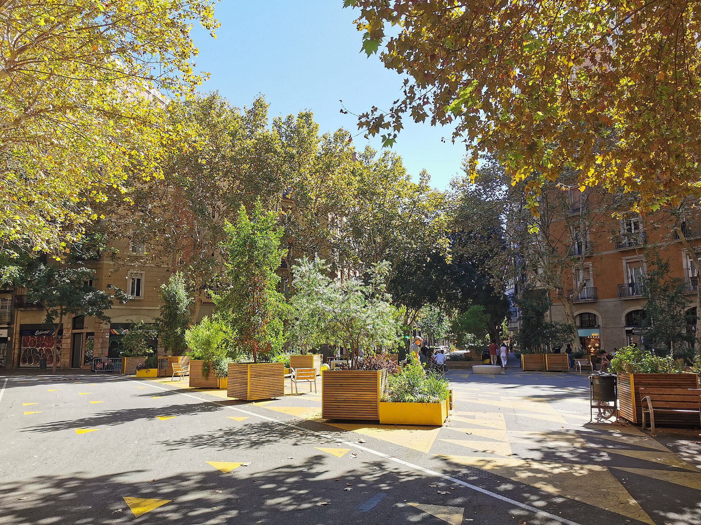
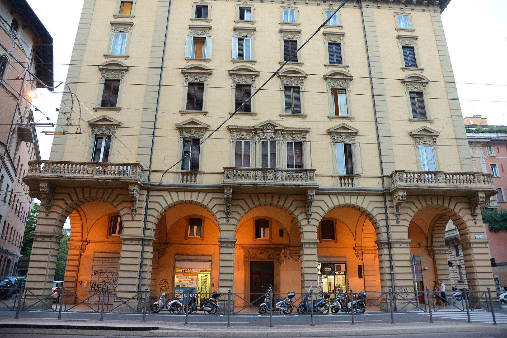
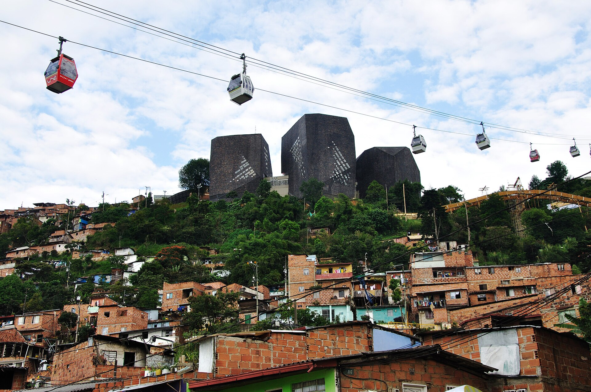
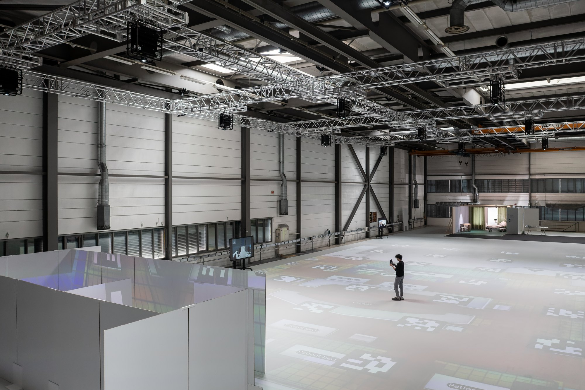
Barcelona · Amsterdam · Bologna · Whanganui · Medellín · Nidau
Part 4 · Cases
사례로 읽는
디자인 스튜어드십
도시 · 공유재 · 비인간 · 미래세대 · 공공혁신랩
Case 1 · 목적의 재설계
암스테르담 시티 도넛
Amsterdam City Doughnut · 2020.4 · 암스테르담시 × Kate Raworth / DEAL
코로나19 한가운데서 시 의회가 도넛 경제를 순환경제 전략 2020–2025의 틀로 공식 채택.
50%
2030년까지 신규 원자재 사용 감축
2050
완전 순환 도시 목표 연도
스튜어드십 읽기
도시의 성공 지표를 성장에서 ‘사회적 기초 위·지구적 한계 아래’로 바꿈 → Eckert 도넛 커리큘럼의 행정 버전. 시민 네트워크 ‘Amsterdam Donut Coalitie’가 공동 관리인으로 참여.
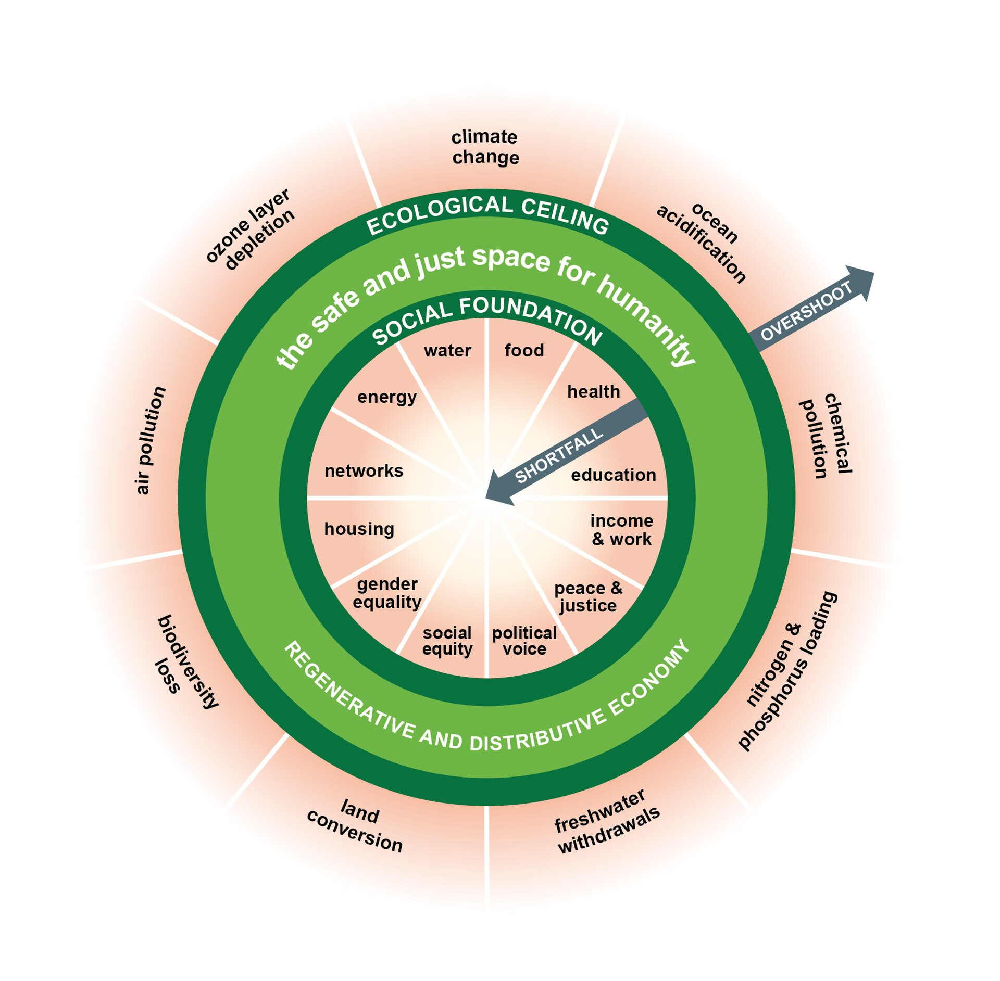
Amsterdam
Case 2 · 실험으로 제도를 바꾸다
바르셀로나 슈퍼블록
(Superilles)
Salvador Rueda · BCNecologia · Poblenou 2016 → Sant Antoni 2018 → Eixample ‘Superilla Barcelona’ 2020–23
3×3 블록을 묶어 내부 통과 차량을 막고 거리를 시민에게 돌려줌. 페인트·화분·벤치의 전술적 도시계획으로 먼저 실험하고, 주민 참여를 거쳐 녹색 축(Consell de Cent 등)으로 영구화.
스튜어드십 읽기
초기 반발에 애자일하게 대응하며 ‘미완의 디자인’을 유지 → 거리의 주인을 차량에서 주민으로 이동. 디자이너는 계획가가 아니라 실험의 조율자·번역자.
Eckert 원칙: 애자일 · 포용과 참여 · 예측과 평가
3×3 Superilla 클릭하면 내부 통과 차량이 사라지고 거리가 녹색(보행·녹지)으로 바뀐다. 외곽 도로의 차량은 계속 순환.
Bologna
Case 3 · 공유재의 공동 관리
볼로냐 도시공유재 규약
Regolamento sui beni comuni urbani · 2014.5 · 볼로냐시 × Labsus · LabGov
시민과 행정이 공원·광장·빈 건물 등 도시 공유재를 함께 돌보기 위한 ‘협력 협약(patti di collaborazione)’을 맺을 수 있도록 한 조례. 시민은 민원인이 아니라 공동 관리인이 된다. 이후 이탈리아 여러 도시로 확산.
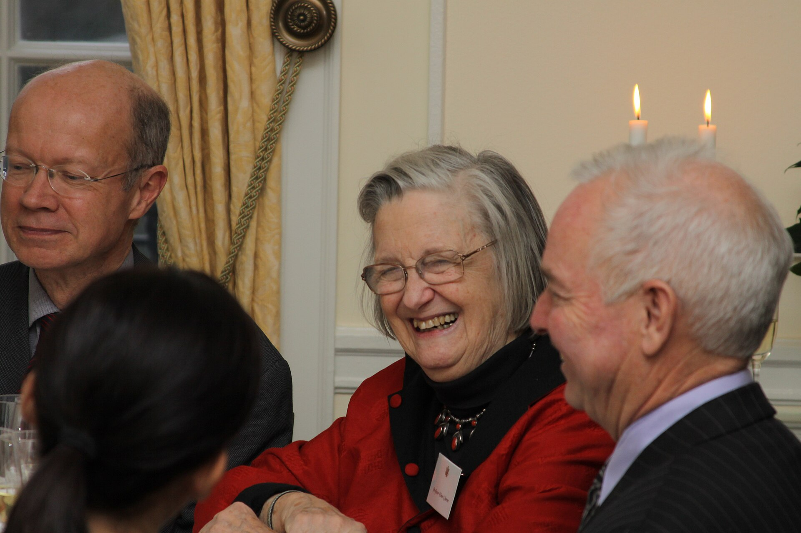
이론적 배경 · Elinor Ostrom (2009 노벨 경제학상)
『공유의 비극을 넘어(Governing the Commons, 1990)』 공동체 자치의 8개 설계 원칙
① 명확한 경계 ② 지역 조건과의 부합 ③ 집합적 선택 ④ 모니터링 ⑤ 단계적 제재 ⑥ 갈등 해결 장치 ⑦ 자치 권리의 인정 ⑧ 중첩된 조직
스튜어드십이 ‘제도’로 설계될 때, 공유재는 국가도 시장도 아닌 돌보는 공동체가 관리한다.
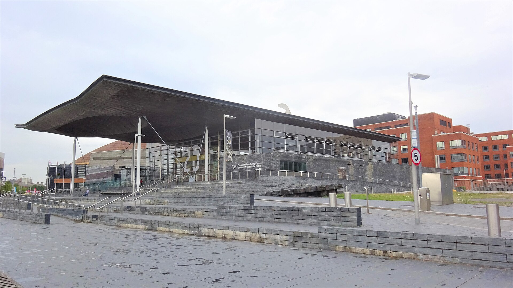
Case 5 · 미래세대의 관리인
웨일스 미래세대 웰빙법 (2015)
공공기관이 7개 웰빙 목표와 5가지 일하는 방식, 곧 장기적 사고·예방·통합·협력·참여를 따르도록 법제화. 미래세대 위원(Future Generations Commissioner)이 아직 태어나지 않은 시민을 대변.
→ Eckert: 체계적 예측과 영향 평가
Senedd, Cardiff · Wales
Case 4 · 비인간 존재의 관리인
테 아와 투푸아 법 (2017)
뉴질랜드 황가누이 강에 법적 인격 부여. 정부와 마오리 이위(iwi)가 각 1인씩 지명한 두 명의 수호자 Te Pou Tupua가 강의 ‘얼굴과 목소리’로서 강을 대리·관리.
→ Eckert: “인간과 인간이 아닌 존재의 관리인”
Whanganui River, New Zealand
Case 6 · 가장 취약한 곳에 가장 좋은 디자인을
메데인 사회적 도시주의
Urbanismo Social · Sergio Fajardo 시장(2004–07) · PUI 통합도시프로젝트 · Metrocable(2004) · Parque Biblioteca España(2007)
세계에서 가장 폭력적인 도시로 불리던 메데인은 고지대 비공식 주거지에 케이블카·도서관 공원·옥외 에스컬레이터를 놓으며 공공 공간의 질을 사회 정의의 수단으로 삼았다. 계획 단계마다 주민 워크숍(imaginarios)을 운영.
스튜어드십 읽기
사회적 경계의 ‘미달(shortfall)’, 곧 교육·이동·안전을 채우는 디자인. 디자인이 신뢰를 회복하는 거버넌스 도구가 됨.
Medellín, Colombia
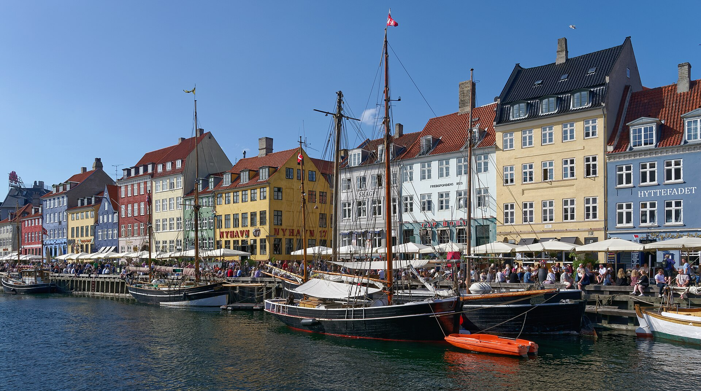
Denmark · 2002–2018
MindLab
경제·고용·교육부 공동 부처간 혁신 조직 · Christian Bason
시민 경험을 정책 설계에 끌어들인 최초의 정부 디자인랩. 기업 업종코드(Branchekode) 개편은 HDL이 꼽은 스튜어드십 사례.
Finland · Sitra · 2009–2013
Helsinki Design Lab
Marco Steinberg · Bryan Boyer · Justin W. Cook · Dan Hill
‘전략 디자인’을 공공 영역에 도입하고, 스튜어드십을 변화 주체의 핵심 역량으로 정식화(Legible Practises, 2013).
UK · Cabinet Office · 2014–
Policy Lab
영국 내각사무처 · 정책의 디자인 방법론 도입
민족지학·프로토타이핑·시민 참여로 정책을 공동 설계. 정부 디지털서비스(GDS)와 함께 영국 공공혁신의 축.
한국: 행정안전부 국민디자인단(2014–) · 서울시 사회문제해결디자인, 정부 안의 스튜어드십 장치로 비교해 볼 것
Case 8 · Eckert의 현장
Swiss Center for
Design and Health 리빙랩
스위스 Nidau · 연방·베른주·민간 파트너의 공공-민간 협력 국가 기술역량센터 · BFH 연구그룹(2007~)에서 출발
약 560㎡의 확장현실(XR) 시뮬레이션 공간에 평면도를 1:1로 투사하고, 의사·간호사·환자·건축가가 함께 병원 동선을 롤플레이하며 검증한다(예: Bülach 병원).
디자이너는 해답을 납품하지 않는다. 이해관계자가 함께 보고, 겪고, 결정할 수 있는 장을 디자인한다.
SCDH Extended-Reality simulation area · vitality.swiss
Conclusion
‘결과’를 만드는 디자인에서 ‘관계’를 돌보는 디자인으로
결과물 · 媒介物 → 관계 · 媒介機
통제 · control → 돌봄 · care
작가 · authorship → 리더십 · stewardship
수행자 · agent → 변혁의 주체 · steward
납품 · delivery → 지속적 관리 · tending
스튜어드십은 디자인 거버넌스의 ‘부록’이 아니라 엔진이다.
스튜어드십은 디자인 거버넌스의 ‘부록’이 아니라 엔진이다.
디자이너가 자기 개발에서 출발해 관계와 생태계를 돌볼 때, 거버넌스는 위계에서 혁신으로 이동한다.
Q1
나는 누구의 관리인인가?
내가 참여한 최근 프로젝트에서 ‘보이지 않던 이해관계자’, 곧 비인간, 미래세대, 목소리 없는 주민은 누구였는가?
Q2
한국 공공디자인 제도의 스튜어드십 공백
과업지시서·용역·준공 검사 중심의 발주 구조에서, ‘지속적 관리(tending)’는 누가 맡는가? 볼로냐 협력 협약이나 웨일스 미래세대 위원 같은 장치를 한국에 도입한다면?
Q3
Y자형 디자이너는 어떻게 길러지는가
대학원 교육은 T자형을 넘어 연결 역량과 자기 개발을 어떻게 커리큘럼화할 수 있는가?
10:00
모둠 토론 타이머
숫자를 클릭하거나 T 키로 시작·정지
Assignment
스튜어드십 진단 카드
각자 관심 있는 국내 공공디자인 사업 1건을 골라 다음을 A4 2쪽으로 정리.
도넛 진단 어떤 사회적 기초를 채우고, 어떤 지구적 한계를 넘었는가
네 영역 평가 Eckert 4영역별 강점·공백
관리인 지도 사업 이후 누가 무엇을 돌보는가
거버넌스 제안 위계형 절차를 스튜어드십형으로 바꾸는 장치 1가지
참고: Eckert의 12원칙 · Design Council 4개 역할 · Ostrom 8원칙
AIGA (2017). AIGA Designer 2025. educators.aiga.org
Block, P. (1993). Stewardship: Choosing Service over Self-Interest. Berrett-Koehler.
Boyer, B., Cook, J. W. & Steinberg, M. (2013). Legible Practises: Six stories about the craft of stewardship. Helsinki: Sitra.
Brighton 05-06-07 (2008). Design Issues, 24(1), 91–93. MIT Press.
Buchanan, R. (1992). Wicked Problems in Design Thinking. Design Issues, 8(2), 5–21.
Davis, J. H., Schoorman, F. D. & Donaldson, L. (1997). Toward a Stewardship Theory of Management. Academy of Management Review, 22(1), 20–47.
Design Council (2021). Beyond Net Zero: A Systemic Design Approach.
Eckert, J. (2017). The Y-Shaped Designer: Connective Competences as Key to Collaboration across Disciplines. Journal of Education and Learning, 6(4), 137–144.
Eckert, J. (2017). The Agile Artifact. Universal Journal of Management, 5(5), 236–242.
Eckert, J. (2018). Leading the Conversation – Why Design Education should care more about Leadership and Stewardship in Design. Cumulus Paris.
Eckert, J. (2021). Stewardship in Design. janeckert.ch/blog
Eckert, J. A. (2026). Stewardship in Design Education: Future-Proofing the Eco-Social Curriculum. Lived Places Publishing.
Eckert, J. A. (2025–). nominute.city, post-growth eco-social urban transformation.
Hallsworth, M. (2011). System Stewardship: The future of policy making? Institute for Government.
Maldonado, T. (1970). La Speranza Progettuale. Einaudi.
Montréal Design Declaration (2017). World Design Summit. designdeclaration.org
Moreno, C. et al. (2021). Introducing the “15-Minute City”. Smart Cities, 4(1), 93–111.
Osborne, D. & Gaebler, T. (1992). Reinventing Government. Addison-Wesley.
Ostrom, E. (1990). Governing the Commons. Cambridge University Press.
Papanek, V. (1971). Design for the Real World. Pantheon.
Raworth, K. (2017). Doughnut Economics. Random House.
Rodgers, P. A. et al. (2019). The Lancaster Care Charter. Design Issues, 35(1), 73–77.
대전디자인진흥원 (2024). 『2024년 도시디자인 리빙랩 성과공유회』.
| 파일 | 저작자 / 내용 | 라이선스 | 출처 |
|---|---|---|---|
| amsterdam.jpg | Massimo Catarinella | CC BY-SA 3.0 | Commons: KeizersgrachtReguliersgrachtAmsterdam.jpg |
| barcelona_superblock.jpg | Cataleirxs | CC BY-SA 4.0 | Commons: Superilla_del_barri_de_Sant_Antoni,_Barcelona.jpg |
| barcelona_superblock2.jpg | Cataleirxs | CC BY-SA 4.0 | Commons: Carrer_Consell_de_Cent_de_Barcelona,_tram_de_la_Superilla_de_ |
| bologna.jpg | FrancescoLama | CC BY-SA 4.0 | Commons: Bologna_Portici_di_Via_dei_Mille.jpg |
| book.png | Stewardship in Design Education (cover) | © Lived Places Publishing | fulcrum.org |
| brighton.jpg | Steve Daniels | CC BY-SA 2.0 | Commons: Brighton_Palace_Pier_and_beach_-_geograph.org.uk_-_7833500.jp |
| codesign_workshop.jpg | Jan Dittrich (WMDE) | CC BY 4.0 | Commons: TechnicalWishlist_Workshop_Search_16-18_Munich_StickyNotesWal |
| copenhagen_mindlab.jpg | Jakub Hałun | CC BY-SA 4.0 | Commons: Nyhavn,_Copenhagen,_20220618_1726_7351.jpg |
| doughnut.png | DoughnutEconomics | CC BY-SA 4.0 | Commons: Doughnut_(economic_model).jpg |
| forest_steward.jpg | Michal Klajban | CC BY-SA 4.0 | Commons: Sun_getting_through_fog_in_the_New_Zealand_bush,_Bryant_Range |
| helsinki.jpg | Tyg728 | CC BY-SA 4.0 | Commons: Helsinki_Senate_Square_20170130.jpg |
| je_curric.jpg | Jan Eckert, Stewardship Curriculum | © Jan Eckert | janeckert.ch/blog/stewardship-in-design |
| je_mirror.jpg | Jan Eckert, Four Areas of Stewardship in Design | © Jan Eckert | janeckert.ch/blog/stewardship-in-design |
| london_policy.jpg | Txllxt TxllxT | CC BY-SA 4.0 | Commons: London_-_Whitehall_-_View_South_I.jpg |
| maldonado.jpg | Pietro Luca Cassarino | CC BY-SA 3.0 | Commons: Toms_Maldonado_Milano_2014.jpg |
| medellin.jpg | JoranL | CC BY-SA 4.0 | Commons: Biblioteca_de_Espaa_and_Metrocable_02.jpg |
| montreal.jpg | Taxiarchos228 | CC BY 3.0 | Commons: Montreal_-_QC_-_Skyline.jpg |
| nm_satoakichi.jpg | Satoakichi | © Jan Albert Eckert 2025 | nominute.city |
| nm_tadasu.jpg | Tadasu-Gawara, Kyoto | © Jan Albert Eckert 2025 | nominute.city |
| ostrom.jpg | US Embassy Sweden | CC BY 2.0 | Commons: Nobel_Laureate_Elinor_Ostrom_(Economics)_2_(4171860780).jpg |
| papanek.jpg | Rochester Institute of Technology | Public domain | Commons: Victor_Papanek,_RIT_NandE_Vol13Num3_1981_Jan22_Complete.jpg |
| paris_15min.jpg | Jacques Paquier | CC BY 2.0 | Commons: Rue_de_Rivoli_(50022920567).jpg |
| scdh_sim.jpg | SCDH Bülach hospital simulation | © SCDH | vitality.swiss/en/articles/2024/scdh |
| scdh_xr.jpg | SCDH XR simulation area | © SCDH | vitality.swiss/en/articles/2024/scdh |
| streetmoves.jpg | Elsa Soläng / Vinnova & ArkDes (Street Moves) | Press image - all rights reserved; editorial/educational use | globetrender.com/2021/01/21/street-moves-sweden-one-minute-city/ |
| wales.jpg | Rosser1954 | CC BY-SA 4.0 | Commons: The_Senedd,_Cardiff_Bay,_South_Wales._View_from_the_east.jpg |
| whanganui.jpg | Duane Wilkins | CC BY 3.0 | Commons: Photo_taken_in_Whanganui_-_panoramio_-_Duane_Wilkins_(1).jpg |
| ll_ws6.jpg | 2024 대전 도시디자인 리빙랩 현장 | 대전디자인진흥원 | 성과공유회 자료집 (2024) |
교육 목적 사용. Wikimedia Commons 이미지는 각 CC 라이선스 조건(저작자 표시·동일조건변경허락)을 따름. © 표기 이미지는 강의 내 인용 목적으로만 사용.
공공거버넌스와 리더십 2026 · 이현성